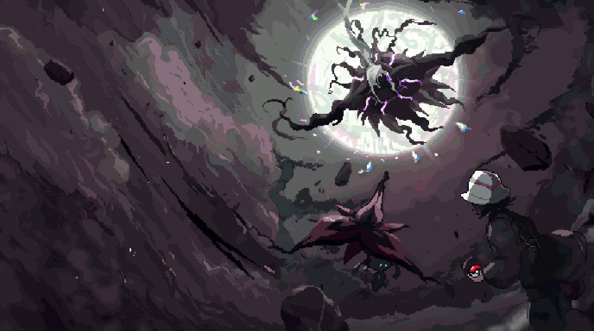

Accueil
Ton activité
Temps de jeu
0 min
Sessions
0
Dernière fois
Jamais
Pack
Synchronisez vos mods, resource packs et shader packs avec le serveur Karamon
Synchronisez le pack pour afficher la liste.
Outils
Sauvegardes et diagnostic
Sauvegardes (saves + config)
Les 10 dernières sauvegardes sont conservées.
Rapports de crash
Chargement…
Captures
Vos screenshots Minecraft (touche F2 en jeu)
Chargement…
Boutique
Les Lumis se dépensent dans le menu Karamon en jeu. Le paiement se fait sur karamon.fr.
Chargement…
Paramètres
Configuration de votre environnement Minecraft
Chemins
Laisser vide pour utiliser le dossier du launcher
Jeu
Recommandé : 8192 à 12288 Mo (8 à 12 Go)
Choisissez un preset ou personnalisez les args.
Affiche le bouton « Serveurs (dev) » sur l'écran titre pour rejoindre un serveur local ou du réseau. Aussi activable en lançant le launcher avec
--dev.
Statistiques
Temps total0 min
Sessions0
PremièreAucune
Système
RAM…
CPU…
OS…
Maintenance
Revérifie chaque fichier du pack, retélécharge ceux qui sont abîmés et répare les fichiers de configuration vides. Utile si le jeu plante au démarrage.
Mises à jour
Cliquez pour vérifier la disponibilité d'une mise à jour.